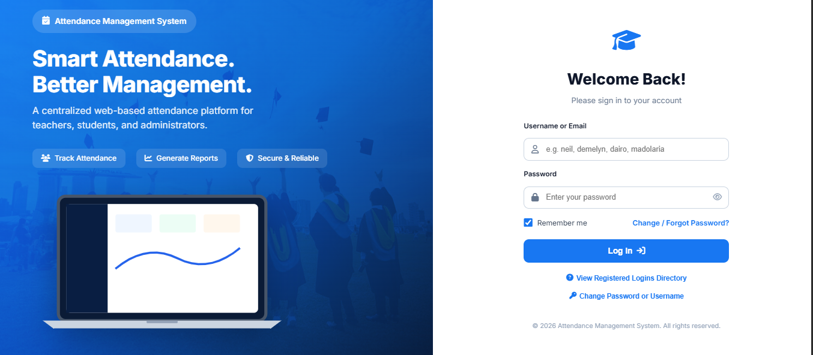
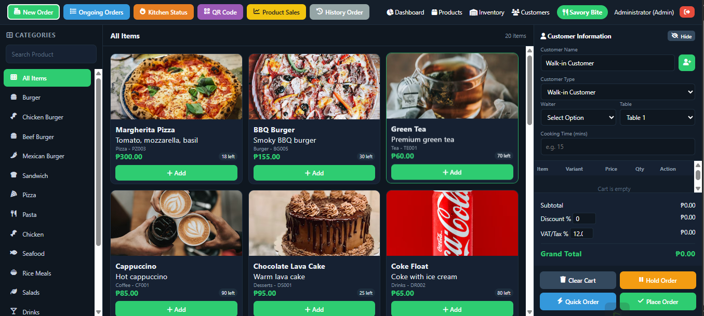
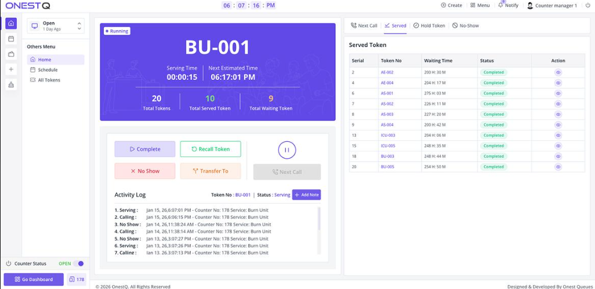
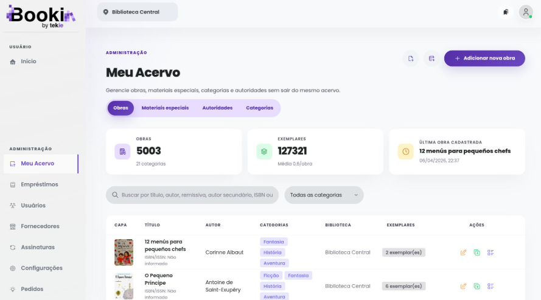
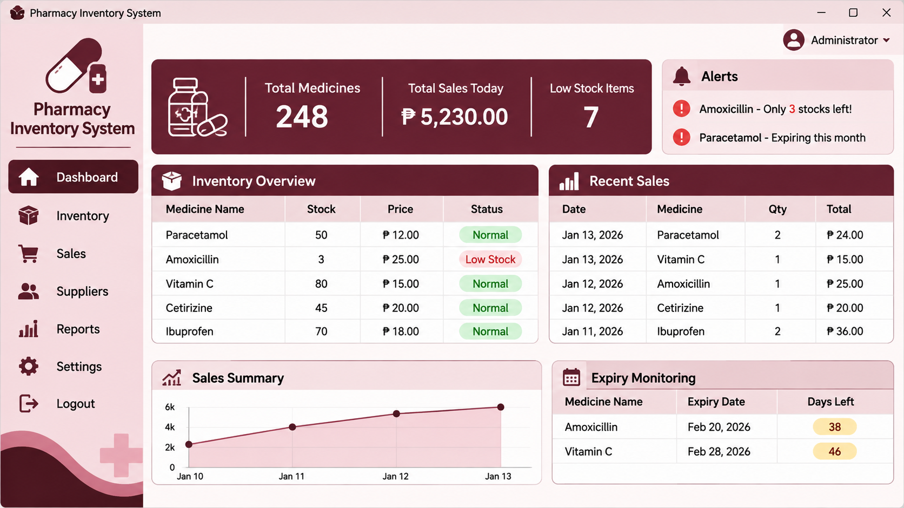
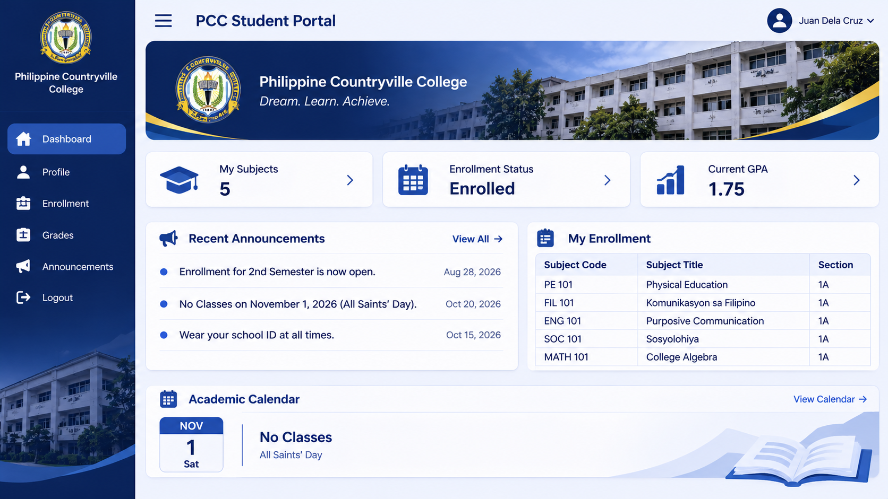
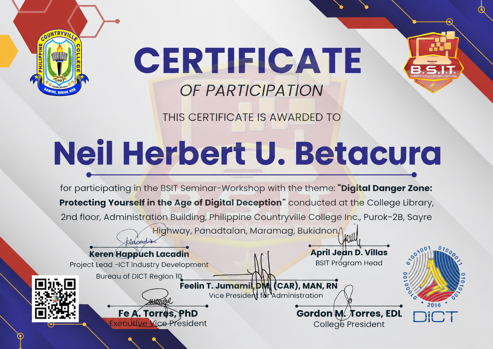
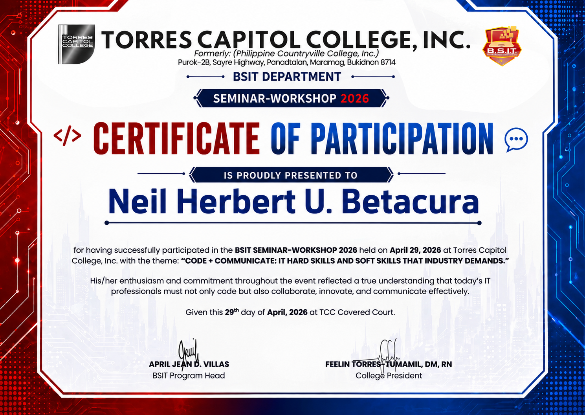
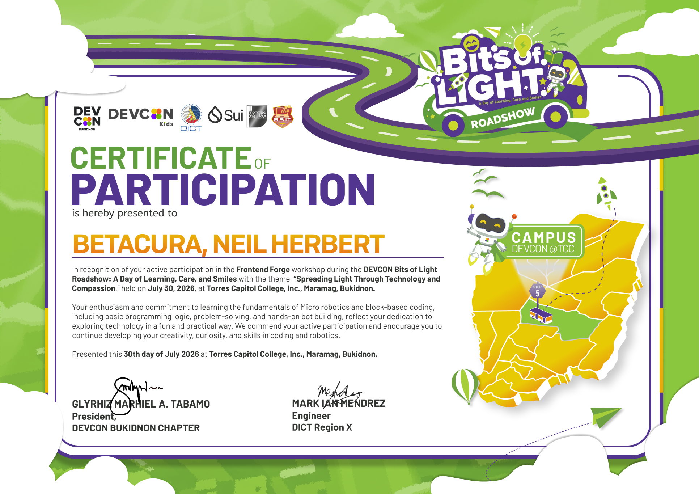

Project Title
Project comprehensive description goes here...
Select your preferred dynamic aesthetic:
I’m a technology driven developer focused on designing, developing, and delivering practical digital solutions. I work across web technologies, software applications, and information systems, combining technical knowledge with creative problem-solving to build functional, user-friendly, and efficient platforms. My experience includes frontend and backend development, interface design, database integration, system architecture, and IT support. By incorporating modern technologies and AI-powered development tools into my process, I continuously explore better ways to innovate, optimize workflows, and transform complex ideas into dependable digital products.
const engineer = {
name: 'Neil Herbert Betacura',
role: 'Web Application Developer & Software Developer',
coreStack: ['HTML5', 'Python', 'JavaScript', 'MySQL','MS Access'],
passion: 'Building impactful, robust products',
deploy: () => import('future-forward')
};
Projects Created
Web & Software Engineering
Client Satisfaction
Microservices Built
Transforming complex software challenges into elegant, highly maintainable digital solutions.
Hello! I'm Neil Herbert Betacura, a Web Developer and IT Solutions Specialist passionate about transforming ideas into innovative digital solutions. With a strong interest in technology, software development, and problem-solving, I create websites, customized information systems, and applications designed to make everyday processes smarter, faster, and more efficient.
My expertise covers frontend and backend development, UI/UX design, database management, system development, hardware and software troubleshooting, PC assembly, and IT technical support. I also leverage AI-assisted development tools to enhance productivity, explore new technologies, and develop more efficient approaches to solving technical challenges.
I believe that great technology is not simply about creating something that works it is about building solutions that serve a purpose, solve real-world problems, and deliver meaningful results.
Take a look around and explore my work. Discover the projects I've developed, the technologies I've explored, and the solutions I've brought to life. Whether you're looking for a developer, a technical collaborator, or someone who can turn an idea into a working system, I'm ready to take on the challenge.
Decoupled systems that scale without technical debt.
Practical LLM agent pipelines and workflow automations.
Sub-second response times and automated test coverage.
CI/CD pipelines, containerization, and type-safe systems.
Assisted with administrative and technical operations, including database encoding and management, document preparation, Microsoft Word processing, file organization, and basic computer maintenance. Supported office productivity by handling digital records and ensuring computer equipment remained functional.
Introduced students to fundamental Information Technology concepts, basic computer operations, and digital literacy. Assisted learners in understanding computer hardware, software applications, and essential technology skills through practical demonstrations and guided instruction.
Provided on-site computer and laptop troubleshooting, maintenance, software installation, operating system configuration, and basic hardware diagnostics. Delivered personalized technical assistance to clients in their homes, helping resolve computer-related issues and improve device performance.
Graduated top of class. Specialized in Distributed Systems, Algorithms, Data Modeling, and Software Engineering Methodologies. Lead Developer for the University Capstone Innovation Award.
Graduated top of class. Specialized in Distributed Systems, Algorithms, Data Modeling, and Software Engineering Methodologies. Lead Developer for the University Capstone Innovation Award.
Graduated top of class. Specialized in Distributed Systems, Algorithms, Data Modeling, and Software Engineering Methodologies. Lead Developer for the University Capstone Innovation Award.
Graduated top of class. Specialized in Distributed Systems, Algorithms, Data Modeling, and Software Engineering Methodologies. Lead Developer for the University Capstone Innovation Award.
A comprehensive suite of modern frameworks, databases, cloud toolchains, and AI integrations.
SSR, SSG, Server Components, App Router, and complex responsive state management.
Strict typing, generics, modern ESNext patterns, performance optimization, and clean modular code.
Design tokens, accessible component libraries, responsive layouts, micro-animations, and theme engines.
High-concurrency microservices, JWT authentication, event-driven pipelines, and REST APIs.
Asynchronous APIs, background workers, data processing scripts, and machine learning pipelines.
Relational schema normalization, complex SQL indexing, query execution tuning, and automated migrations.
Distributed session storage, rate limiting, pub/sub messaging, and high-speed data caching.
Multi-stage container builds, automated GitHub Actions pipelines, AWS ECS, S3, and cloud deployments.
Retrieval-Augmented Generation (RAG), vector embeddings, agentic workflows, and prompt engineering.
Custom development services tailored for startups, growth-stage ventures, and enterprise platforms.
Building responsive and user-friendly websites for businesses, organizations, and personal portfolios.
Developing practical desktop applications designed to simplify everyday business and organizational operations.
Designing organized databases and developing data management solutions for applications.
Providing basic technical assistance, computer maintenance, and troubleshooting.
Creating intuitive user interfaces and interactive prototypes for web and mobile applications.
Developing simple hardware-based projects and automation solutions using microcontrollers and programming.
Empowering learners and teams through comprehensive computer literacy and practical programming guidance.
Delivering high-precision document formatting, structured reporting, and systematic database encoding.
Harnessing cutting-edge generative AI models and automation tools to enhance application functionality.
A curated selection of production applications, enterprise systems, and open-source tooling.

A modernized attendance management platform designed to streamline student and employee attendance tracking through an intuitive dashboard, centralized records, and automated attendance reporting.

A comprehensive restaurant point-of-sale solution designed to streamline food ordering, cashier operations, customer management, and inventory monitoring. Savory Bite POS provides an integrated platform for managing restaurant transactions, monitoring kitchen activities, and improving overall operational efficiency.

A desktop-based queue management application designed to organize customer flow, automate ticket numbering, and improve service efficiency. The system allows administrators and service personnel to manage waiting customers, call the next available ticket, and monitor queue statuses across multiple service counters.

A centralized library management application designed to simplify book cataloging, member registration, borrowing transactions, and return management.

A comprehensive pharmacy inventory management solution designed to simplify medicine tracking, sales transactions, and stock monitoring.

A web-based platform for students to access their academic information and manage their profiles.
Demonstrated proficiency across cloud engineering, full-stack development, and artificial intelligence.

Philippine Countryville College Inc. & DICT Region 10
Verified Active
Torres Capitol College, Inc. (BSIT Department)
Verified Active
DEVCON Bukidnon Chapter & DICT Region X
Verified ActiveTorres Capitol College, Inc.
Verified ActiveTestimonials reflecting commitment to high technical standards, clear communication, and reliable delivery.
"Neil Herbert Betacura successfully developed an organized and user-friendly system designed to support students during their pre-teaching activities. His dedication, creativity, and attention to detail made the system efficient and easy to navigate. His work demonstrated excellent technical skills and a strong commitment to providing students with a convenient learning experience."
"Neil Herbert Betacura demonstrated great dedication and initiative by developing a system to help students prepare for their semi-final defense. His effort provided valuable support, helping students become more organized and prepared for their presentations. His commitment to helping others reflects his creativity, technical skills, and willingness to make a positive difference in the academic community."

"Neil Herbert Betacura stepped up during a time when everything felt complicated and overwhelming by developing a dormitory website to help students in times of need. His initiative, dedication, and willingness to help made a difficult situation easier to manage. Despite the challenges and limited time, he turned an urgent need into a meaningful and practical solution. His work truly reflects resourcefulness, commitment, and a genuine desire to help others."
"Neil Herbert Betacura once again proved his ability to turn challenges into solutions by developing a practical system that addressed students' needs during a difficult time. His creativity, patience, and technical knowledge helped transform a complicated process into something more organized and accessible. His willingness to take action when help was needed most shows his dedication to making a positive impact through technology."
"I still remember how Neil Herbert Betacura helped me during a time when everything felt so complicated and overwhelming. When I needed help the most, he willingly took the time and effort to create a dormitory website that could make things easier for us."
"I remember how Neil Herbert Betacura helped me when my laptop was constantly lagging and experiencing problems with some malfunctioning drivers. I was having a hard time dealing with the issue, but he willingly took the time to troubleshoot and fix it. I genuinely appreciate his patience, technical knowledge, and willingness to help without hesitation. What I appreciated most was that he didn't just fix the problem; he also helped ease my frustration when I needed assistance. Thank you, Neil, for sharing your skills and always being willing to help."
Have a project in mind, need technical leadership, or want to discuss a software consultation? Send me a message!
neilherbertbetacura@gmail.com
P-2, Poblacion, Kadingilan, Bukidnon
UTC-8 (PST) / UTC+8 (Flexible)Currently accepting select contracts & senior roles.
Typical Response: < 12 hoursFill out this form and I will get back to you promptly.